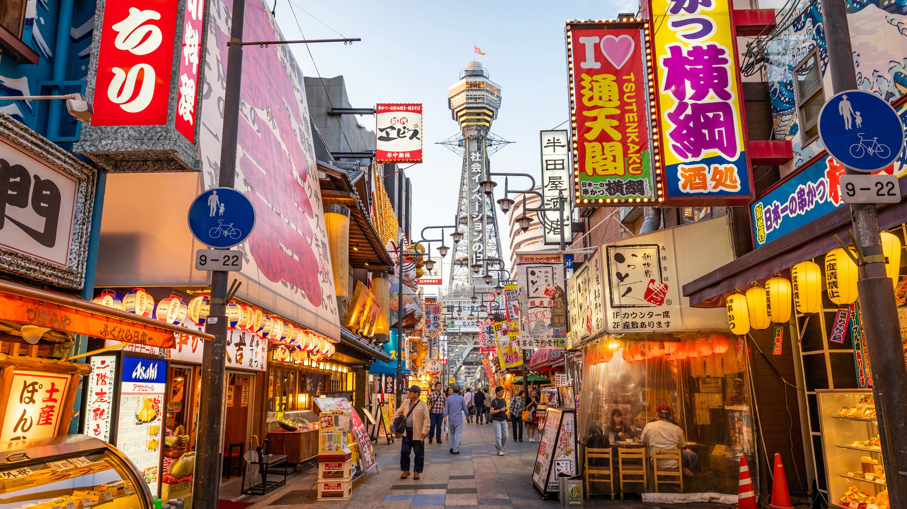

Osaka- A cultura Adoravel
Com as melhores galerias comerciais, restaurantes que oferecem comida incrível e os principais pontos de vida noturna da cidade, Osaka é um dos principais lugares para visitar no Japão. Acredite, isso não apenas mimaria o foodie ou amante de festas que existe em você, mas também o turista obstinado que adora testemunhar as maravilhas de cada lugar que visita. Este é o lugar preferido para visitar no Japão para iniciantes!